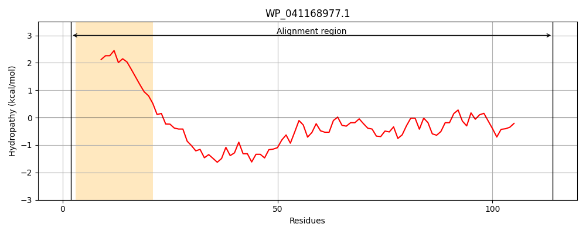
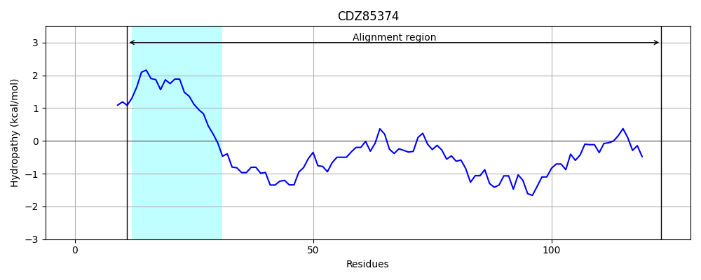
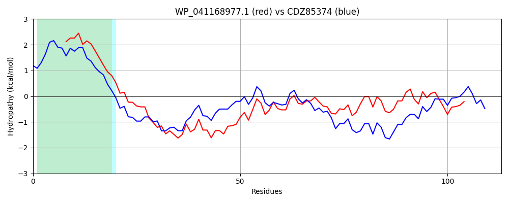

Hit Accession: CDZ85374
Hit TCID: 1.M.13.1.4
Hit Description: gnl|BL_ORD_ID|2895 gnl|TC-DB|CDZ85374.1|1.M.13.1.4 prophage protein [Citrobacter koseri]
Mach Len: 113
e:0.000000
Query TMS Count : 1
Hit TMS Count: 1
TMS-Overlap Score: 0.950000
Predicted Substrates:None
BLAST Alignment:
| Protein Hydropathy Plots: | |
|---|---|
|  |  |
Pairwise Alignment-Hydropathy Plot: | |
|  | |